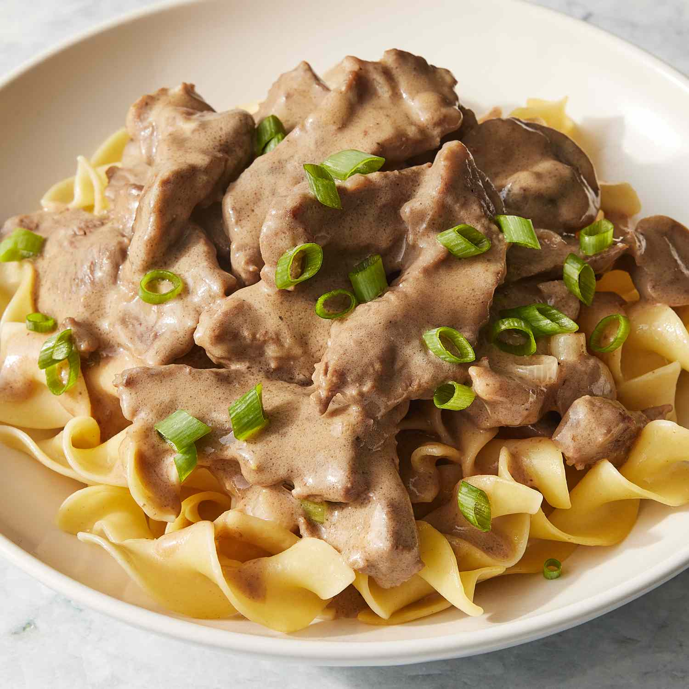

Beef Stroganoff

Description
This Brazilian Beef Stroganoff is a delicious comfort food that your family is going to love. It is made with tender pieces of beef, smothered in a creamy sauce, and typically served with little potato sticks on top, adding fun and texture. The best part? This dish is so quick and easy to prepare that you can have dinner ready and on the table in 30 minutes.
Ingredients
- 1 Tbsp olive oil
- 1.5 lbs high quality beef such as filet mignon, beef tenderloin, top sirloin, ribeye steak cut into cubes
- 1 medium onion, diced
- 2 Tbsp Brazilian sofrito or 3 cloves of garlic, minced
- 8 oz white mushrooms, sliced
- 6 oz tomato paste
- 2 Tbsp ketchup
- 2 Tbsp Worcestershire sauce
- 2 cups heavy cream
- Salt and pepper to taste
Steps
- Season the beef pieces with salt and pepper, and let it sit on the counter at room temperature for about 15-20 minutes.
- Place a large heavy bottomed pan or dutch oven over medium to high heat. Add the olive oil, and when the oil is hot, add in the beef pieces, and quick sear them in a single layer, no longer than a minute or 2.
- Remove the beef from the pan, place it on a plate and reserve.
- Using that same pan, sauté the onions over medium heat for about 2-3 minutes.
- Add the garlic, and sauté until fragrant for about 1-2 minutes.
- Add the sliced mushrooms, and sauté until the mushrooms wilt down for about 5-6 mins.
- Add the beef back in, then the tomato paste, the Worcestershire, and the ketchup and saute for about 2 minutes, stirring.
- Add 1/4 cup of water to the pan, and simmer a couple of minutes, stirring and scraping any bits off the sides and bottom of the pan.
- Add in the the cream, and simmer just a couple more minutes and you're all done!